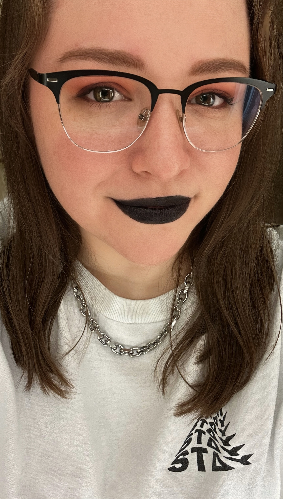

About Me
Bio
Hi, I'm Teddi!

I'm currently a full-stack web dev student at ASU studying web dev and graphic design. It wasn't always my dream to be a web developer, but it's something I've come to enjoy immensely as I continue to learn and grow. With the support of friends and loved ones, I made the decision to pursue this new dream despite believing it might be too late.
Once upon a time, I studied psychology. First it was forensic psychology, then it was biopsychology, and then COVID hit. All my plans felt derailed and I was stuck feeling lost. There I was, working a job that was taxing my mental and physical health and not using my degree. Because of COVID, I didn't have the credentials for grad school. No longer knowing what I wanted, it was terrifying.
After a health scare because of my long hours and high work load, I was encouraged by those around me to find a new path. So here I am. Forging a new path for myself, returning to my lost love of art and design and merging it with my love of the digital. And you know what? It feels pretty damned good.